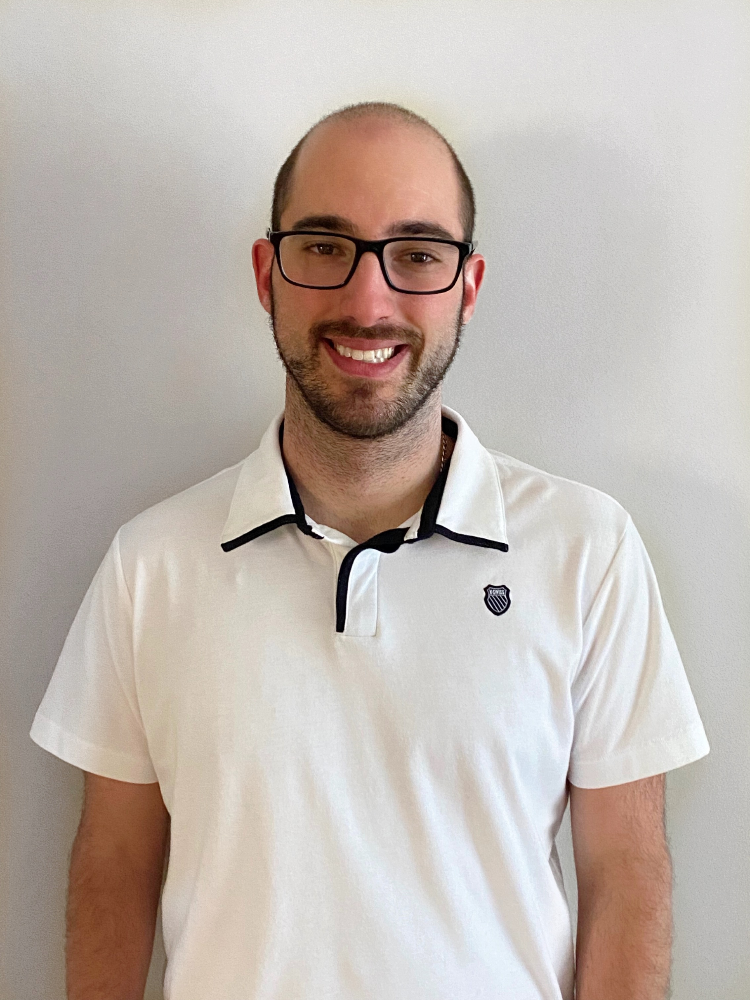

Jarrett D. Phillips (He/Him/His)
BSc. (Hons.), MBinf., PhD.
School of Computer Science
Department of Integrative Biology
Centre for Biodiversity Genomics
Biodiversity Institute of Ontario
University of Guelph

Professional Summary of Research Interests and Expertise
I'm a highly motivated and passionate bioinformatician, data scientist and researcher naturally driven by curiosity
to use mathematical, statistical and computational methods to answer fundamental and applied research questions
in biodiversity science, evolutionary biology, ecology, genomics and bioinformatics, particularly related to
molecular species identification and discovery through DNA barcoding and other DNA-based approaches.
Current Projects
Theoretical Aspects of DNA-based Taxon Identification
- Developing methods to estimate likely required specimen sample sizes for genetic diversity assessment within species using DNA barcoding
- Practical sample sizes for DNA barcoding typically range between 5-10 indviduals per species, but required levels of sampling depth are highly
dependent on the evolutionary history and ecology of the species under study, as well as species rarity and overall project costs.
- I created HACSim (Haplotype Accumulation Curve Simulator), a novel nonparametric stochastic (Monte Carlo) local search optimization algorithm, which has been
developed to better estimate likely required specimen sample sizes based on asymptotic behaviour seen in species' haplotype accumulation curves.
- HACSim has been shown to work well for a variety of species of socioeconomic relevance such as fishes, insects and arachnids based on extensive
simulation studies.
- Developing methods for better visualization and inference of the DNA barcode gap
- The DNA barcode gap —, the difference between genetic variation observed with and among species, is most often visualized using histograms; however,
these plots can be misleading due to dependence on user-defined parameters, thus greatly affecting the overall shape of probability distributions.
- I propose Kernel density estimation provides a better path forward when it comes to establishing the efficacy of DNA barcoding as a molecular identification
tool.
- I also propose the use of nonparametric bootstrapping, specifically the m-out-of-n boostrap, which can be used to estimate the sampling distributions of quantities
of interest in DNA barcoding, particularly extreme order statistics like the minimum interspecific and maximum intraspecific genetic distances, in addition
to the DNA barcode gap.
Building the Reference Library of Life
- Constructing the largest DNA barcode reference sequence library for North American butterflies
- Butterflies are some on the most genetically and morpohologically diverse insects on the planet. One aspect of my work involves generating a DNA barcode
library for over 97% (>800 species) of known butterfly species found in North America
- Current work using this dataset involves correlating species' genetic diversity with geographical covariates (such as latitude and longitude)
using semiparametric and nonparametric regression approaches including Generalized Additive Models (GAMs) and Local Regression (LOESS)
Development of R Software Packages and R Shiny Web Apps for Molecular Biodiversity Assessment
- HACSim is available for download as an R package through the Comprehensive R Archive Network (CRAN) and as an R Shiny web application at shinyapps.io
- VLF is an R package to detect very low frequency variants (VLFs), such as sequencing and PCR errors, and compute error rates at second codon positions in DNA sequences. The package is on CRAN.
Assessing R Metadata Reporting and Standards in the Ecological Literature
-
Within many scientific publications that employ R, lack of proper citation of R versions and packages employed within analyses is rampant
-
We mine article metadata spanning five different ecological journals for publications appearing in 2019 and find significant variation in how R is currently being reported
-
We propose a simple way of standardizing reporting that will help mitigate biases in future studies
Student Supervision and Mentorship
- Amina Asif (with Bob Hanner, 2022) -- University of Guelph -- BINF*6999 -- DNA barcode gap analysis
- Navdeep Singh (with Dan Gillis, 2021) -- University of Guelph CIS*4900 -- HACSim RShiny web application
- Maya Persram (with Bob Hanner, 2020-present) -- University of Guelph Hanner Lab volunteer
- Ashley Chen (with Bob Hanner, 2020-present) -- University of Guelph Hanner Lab volunteer
- Olivia Friesen Kroeker (with Bob Hanner, 2020-present) -- University of Guelph Hanner Lab volunteer
- Scarlett Bootsma (with Dan Gillis, 2020-2021) -- University of Guelph -- CIS*4900/4910 -- HACSim simulation study
- Christina Fragel (with Bob Hanner, 2018-2019) -- University of Guelph -- BINF*6999 -- DNA barcode sequence classification with machine learning
- Jiaojia (Paula) Yu (with Bob Hanner, 2018-2019) -- University of Guelph -- BINF*6999 MDMAPR qPCR R Shiny app
- Steven French (with Dan Gillis, 2018) -- University of Guelph -- CIS*4900/4910 -- HACSim R package
- Julia Harvie (with Bob Hanner, 2018-2019) -- University of Guelph-- MCB*4500/4510 -- Data mining GenBank and BOLD
- Ankita Bhanderi (with Bob Hanner, 2018) -- University of Guelph -- BINF*6999 -- Data mining GenBank and BOLD
Curriculum Vitae
CV — last updated June 2022
Contact
GryphMail
GMail
Relevant Links
GitHub
Google Scholar
LinkedIn
ORCiD
ResearchGate
Twitter